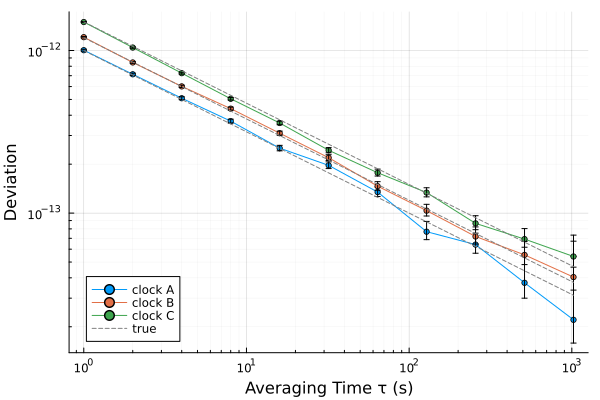
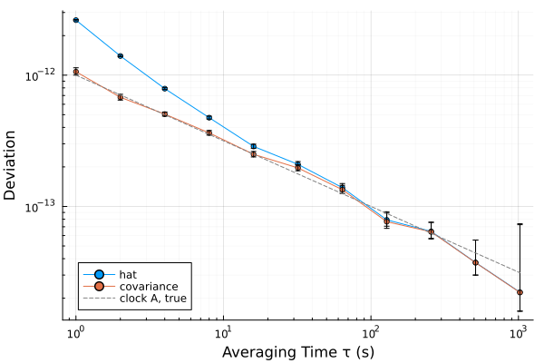

Three clocks and the three-cornered hat
A comparison of two clocks shows the noise of both, and no measurement shows one clock alone. Three clocks compared in pairs can be separated: by the three-cornered hat, from the deviations of the three comparisons (Gray and Allan (1974); SP1065 §10.14), or by the Groslambert covariance, from the three records themselves (Vernotte et al. (2016)). This tutorial simulates three clocks, so that the answer is known, separates them both ways, and shows where each method stops working.
using SigmaTau
using RandomThree clocks and their comparisons
The clocks have white FM noise of $σ_y = 1.0$, $1.2$ and $1.5 × 10^{-12}$ at 1 s, each from its own random stream. A measurement gives the three differences, sampled at the same instants:
τ₀ = 1.0
N = 16_384
σ₁ = [1.0e-12, 1.2e-12, 1.5e-12] # white FM: σ_y at 1 s
clock(σ, seed) =
noise_gen(PhaseData, N, τ₀; sigma1 = Dict(0 => σ), rng = Xoshiro(seed)).x
a, b, c = clock(σ₁[1], 1), clock(σ₁[2], 2), clock(σ₁[3], 3)
ab = PhaseData(a .- b, τ₀)
bc = PhaseData(b .- c, τ₀)
ca = PhaseData(c .- a, τ₀)The hat
For independent clocks the Allan variance of a difference is the sum of the variances of its two clocks, $σ_{ab}^2 = σ_a^2 + σ_b^2$. The three comparisons give three such sums, and each clock follows from them:
\[σ_a^2 = \tfrac{1}{2} \left( σ_{ab}^2 + σ_{ca}^2 - σ_{bc}^2 \right)\]
(SP1065 §10.14, Eqs. (68) and (69)). ncornered_hat takes the results for A−B, B−C and C−A and returns those of the clocks A, B and C:
m = 2 .^ (0:10)
τ = m .* τ₀
hat = ncornered_hat(adev(ab, m), adev(bc, m), adev(ca, m))
using Plots
plot(hat; label = ["clock A" "clock B" "clock C"], legend = :bottomleft)
plot!(τ, σ₁' ./ sqrt.(τ); ls = :dash, color = :gray, label = ["true" "" ""])
The three curves follow the noise put into the three clocks. The results of any one estimator serve, as long as its variance adds for independent clocks: mdev or hdev in place of adev.
The intervals are wider than those of a direct measurement. A separated variance keeps a fraction of the degrees of freedom that the clock would have against a perfect reference: 0.4 for three clocks of equal stability, and less for the most stable of three unequal ones (SP1065 §10.14, Eq. (70)). For clock A that equation gives 0.22. A simulation also has the clock alone, and the EDF of the two results can be compared directly. The columns are $τ$ and the fraction that the hat keeps:
alone = adev(PhaseData(a, τ₀), m)
[τ hat[1].edf ./ alone.edf][1:4, :]4×2 Matrix{Float64}:
1.0 0.225307
2.0 0.234945
4.0 0.241631
8.0 0.250189Where the hat fails
The hat subtracts one measured variance from the sum of two others, and the difference can come out negative: for a clock much more stable than the other two, for clocks that are correlated, and where the data are too few, most often at long $τ$. SP1065 advises the method for clocks of similar stability, and not in place of a low-noise reference (§10.14). Where the variance is negative the deviation is NaN. Here clock A gives way to a clock four times more stable than B. The columns are $τ$, the hat's estimate of that clock and its true deviation:
q = clock(0.3e-12, 4)
qb = PhaseData(q .- b, τ₀)
cq = PhaseData(c .- q, τ₀)
hat_q = ncornered_hat(adev(qb, m), adev(bc, m), adev(cq, m))[1]
[τ hat_q.dev 0.3e-12 ./ sqrt.(τ)]11×3 Matrix{Float64}:
1.0 2.90056e-13 3.0e-13
2.0 2.49183e-13 2.12132e-13
4.0 1.8436e-13 1.5e-13
8.0 1.29814e-13 1.06066e-13
16.0 8.54271e-14 7.5e-14
32.0 7.17171e-14 5.3033e-14
64.0 4.67339e-14 3.75e-14
128.0 NaN 2.65165e-14
256.0 NaN 1.875e-14
512.0 NaN 1.32583e-14
1024.0 NaN 9.375e-15Up to 64 s the estimate lies within about a third of the true value. From 128 s on there is none.
The noise of the instruments
Each record also holds the noise of the instrument that measured it, and the hat counts it as noise of the two clocks of that record. Here every record gets white PM of 2 ps rms, the noise of its own counter:
rng = Xoshiro(10)
counter() = 2e-12 .* randn(rng, N)
ab_n = PhaseData(ab.x .+ counter(), τ₀)
bc_n = PhaseData(bc.x .+ counter(), τ₀)
ca_n = PhaseData(ca.x .+ counter(), τ₀)groslambert works on the records in place of their deviations. It multiplies the second differences of the two records that share a clock and averages the product (Vernotte et al. (2016), Eq. (7)). The noise of a counter is in one record only, so it averages out of the product, and the clock remains (Groslambert et al. (1981), Eqs. (17) to (19); Vernotte et al. (2016), Eqs. (13) and (15)). The columns are $τ$, the hat and the covariance for clock A, and its true deviation:
hat_n = ncornered_hat(adev(ab_n, m), adev(bc_n, m), adev(ca_n, m))
gcov = groslambert(ab_n, bc_n, ca_n, m)
[τ hat_n[1].dev gcov[1].dev σ₁[1] ./ sqrt.(τ)][1:6, :]6×4 Matrix{Float64}:
1.0 2.62404e-12 1.06253e-12 1.0e-12
2.0 1.39922e-12 6.7764e-13 7.07107e-13
4.0 7.89193e-13 5.04605e-13 5.0e-13
8.0 4.74336e-13 3.63094e-13 3.53553e-13
16.0 2.86587e-13 2.49372e-13 2.5e-13
32.0 2.09113e-13 1.96405e-13 1.76777e-13The counters more than double the hat's estimate at 1 s, and the covariance stays within about a tenth of the clock:
plot([hat_n[1], gcov[1]]; label = ["hat" "covariance"], legend = :bottomleft)
plot!(τ, σ₁[1] ./ sqrt.(τ); ls = :dash, color = :gray, label = "clock A, true")
Without instrument noise the three records sum to zero, and the two estimates are then the same number:
groslambert(ab, bc, ca, m)[1].dev ≈ hat[1].devtrueBoth methods need records taken at the same time. SP1065 asks it of the hat, and comparisons made one after another can give a wrong or a negative variance (Groslambert et al. (1981), Eqs. (4) to (6)).
A clock that is not resolved
Both functions report a $χ^2$ interval on the equivalent degrees of freedom of the separated variance. It holds for a clock that dominates its records. For a clock more stable than the others it becomes too narrow once the clock is no longer resolved, and below 1 EDF none is given. For three clocks, groslambert with interval = :klts reports the interval of Lantz et al. (2019) in its place. Where the records do not exclude a clock without noise, its lower limit is 0 and the upper limit is the result. For the stable clock of Where the hat fails, at 95 %, the columns are $τ$, the two limits and the true deviation:
klts = groslambert(qb, bc, cq, m; interval = :klts, confidence = 0.95)[1]
[τ ci_lower(klts) ci_upper(klts) 0.3e-12 ./ sqrt.(τ)]11×4 Matrix{Float64}:
1.0 2.1609e-13 3.41433e-13 3.0e-13
2.0 2.28089e-13 2.8532e-13 2.12132e-13
4.0 1.40716e-13 2.14747e-13 1.5e-13
8.0 0.0 1.58432e-13 1.06066e-13
16.0 0.0 1.09869e-13 7.5e-14
32.0 0.0 9.25357e-14 5.3033e-14
64.0 0.0 6.27496e-14 3.75e-14
128.0 0.0 2.72859e-14 2.65165e-14
256.0 0.0 2.16005e-14 1.875e-14
512.0 0.0 2.36016e-14 1.32583e-14
1024.0 0.0 1.7641e-14 9.375e-15From 8 s on the records set an upper limit only. At 2 s the interval misses the true value: the docstring of groslambert gives the coverage of both intervals in simulation.
More than three clocks
With $N$ clocks the pairs fill a matrix: of results for ncornered_hat, of records for groslambert. One entry for each pair is enough (SP1065 §10.14, Eqs. (71) and (72)). A fourth clock beside the first three:
x = [a, b, c, clock(1.3e-12, 5)]
pairs = Matrix{StabilityResult}(undef, 4, 4)
for i in 1:4, j in i+1:4
pairs[i, j] = adev(PhaseData(x[i] .- x[j], τ₀), m)
end
hat4 = ncornered_hat(pairs)
[τ hat[1].edf hat4[1].edf][end-3:end, :]4×3 Matrix{Float64}:
128.0 30.767 70.812
256.0 25.4289 44.7689
512.0 6.00719 18.7943
1024.0 1.38358 5.07968The columns are $τ$ and the EDF of clock A from three clocks and from four. The fourth clock adds three comparisons, and with them degrees of freedom where the curve has fewest.
Which to use
| At hand | Use |
|---|---|
| the deviations of each pair | ncornered_hat |
| the difference records | groslambert, which keeps the noise of the instruments out |
| three records, and a clock that may not be resolved | groslambert with interval = :klts |
| two measurements of one clock | cross_adev (Two-channel measurements) |